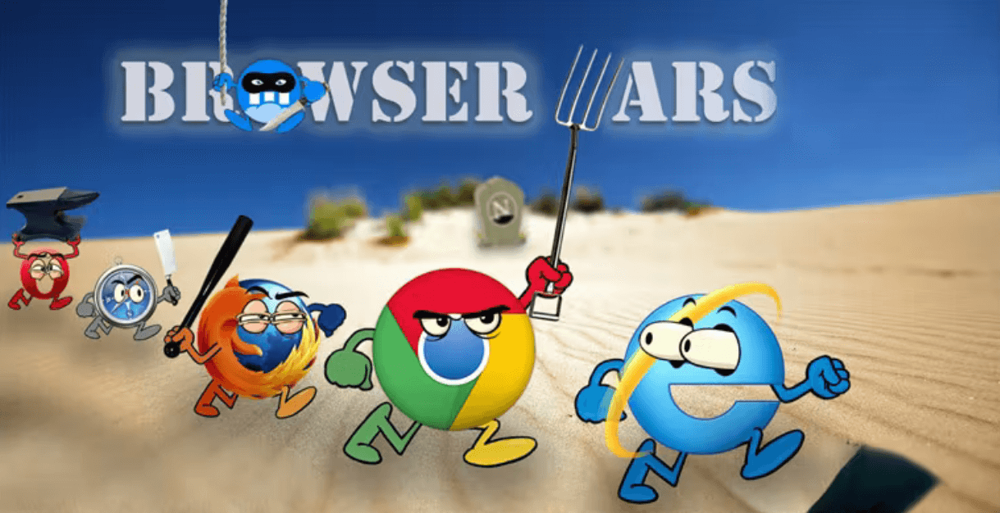

Веб-разработка
Лекция 1: Введение
Рассмотрим:
- этапы проектирования интерфейсов
- стандарты и спецификации, существующими в веб-разработке
- шрифты (веб-шрифты)
- цветовые пространства и их особенности в вебе
- ошибки в макетах под верстку
- UI/UX
- SEO
Рассмотрим:
- Веб-аналитика
- Оптимизация сайта
- SEO
Научимся:
- HTML
- CSS
- JavaScript
- Хорошим правилам построения интерфейса
- Сверстаем небольшой статический веб-сайт и развернем его на хостинге
Улучшим:
- Показатели веб-аналитики
- СЕО
- Доступность (a11y)
Системные требования
Операционная система
- Windows 10 x64
- Mac OS 11 Big Sur и новее
- Ubuntu 20.04 и новее
Браузер
- Браузер, основанный на Blink: Chrome, Яндекс.Браузер, Opera, Edge — последняя версия
- Mozilla Firefox последняя версия
- Apple Safari 15.2 и новее
Не пользоваться:
- иными браузерами
- браузерами более поздних версий
- мобильными браузерами
Причина:
в различных версиях браузерных движков могут отличаться цвета, шрифты и прочее
Git
Специальная программа, которая позволяет отслеживать любые изменения в файлах, хранить их версии и оперативно
возвращаться в любое сохранённое состояние
GitHub desktop
Бесплатное приложение, которое помогает работать с кодом, размещенным в GitHub или других службах размещения
Git
VS Code
Текстовый редактор, разработанный Microsoft для Windows, Linux и macOS
Figma
Графический редактор для совместного проектирования сайтов, приложений и других дизайнерских продуктов
Terminal
Приложение для пользователей инструментов и оболочек командной строки, таких как Command Prompt, PowerShell и
WSL
GitHub
Облачная платформа для хостинга IT-проектов и совместной разработки, поддерживающая систему контроля версий
Git, полноценная социальная сеть для разработчиков
Регламент
- 2-4 академических часа – лекция
- 4-8 часов на самостоятельную домашнюю работу
- В течение всего модуля будет доступен ученический чат
- По окончанию лекций в чат будет выкладываться ссылка на материалы к лекции
Регламент
- Демонстрация выполненной домашней работы будет осуществляться посредством сервиса GitHub. Ссылки на
выполненную домашнюю работу отправлять по адресу portal-spb@ranepa.ru
- Выполнение аттестационного учебного проекта
Тим Бернерс-Ли
- HTTP
- URI/URL
- HTML
- httpd
- WorldWideWeb
- Интернет
Интернет
- Поиск информации
- Общение
- Обучение
Интернет
- Поиск информации
- Общение
- Обучение
- Интернет-торговля
Интернет
- Поиск информации
- Общение
- Обучение
- Интернет-торговля
- Развлечение
Интернет
- Поиск информации
- Общение
- Обучение
- Интернет-торговля
- Развлечение
- Преступление
Программы для работы в вебе
- Браузеры
- Приложения (мини-браузеры PWA). PWA похожи на нативные приложения. Сердце PWA — Service Worker. Service
Worker представляет собой javascript
файл, подключаемый в html коде страницы. В нем разработчик
определяет логику работы с приходящими из фронтэнда запросами и другую функциональность
- Модули и компоненты в ПО
Браузеры. Браузерные движки

Браузерный движок
Программа, преобразующая содержимое веб-страниц в интерактивное изображение на экране
- Trident
- EdgeHTML
- Chromium
Браузерный движок
- Blink — движок, который используется браузерами Google Chrome, Microsoft Edge, Opera, Яндекс Браузер
и другими. Он является ответвлением от WebKit и поддерживает множество современных веб-стандартов и технологий
Браузерный движок
- WebKit — движок, который используется браузером Safari и другими браузерами на основе Chromium. Он
был разработан на основе KHTML и также поддерживает множество современных веб-стандартов и технологий
Браузерный движок
- Gecko — движок, который используется браузером Firefox и другими продуктами Mozilla. Он был
разработан с нуля и имеет свою собственную реализацию веб-стандартов и технологий
Браузерный движок
- Trident — движок, который использовался браузером Internet Explorer до версии 11. Он был
проприетарным и не полностью соответствовал веб-стандартам, что вызывало проблемы с совместимостью и
безопасностью
Браузерный движок
- EdgeHTML — движок, который использовался браузером Microsoft Edge до версии 79. Он был ответвлением
от Trident и имел улучшенную поддержку веб-стандартов и технологий
Браузерный движок
- Chromium — движок, который используется браузерами Microsoft Edge, Brave, Vivaldi
Наличие собственных функций, концептуальные различия в работе, скорость и политика внедрений стандартов и
спецификаций, являются основной проблемой реализации кроссбраузерного отображения веб-сайта.
Как работает веб

Какие бывают сайты
- Статические
- Динамические
- Адаптивные
- Отзывчивые
- SPA
- PWA
Технологии
- Языки программирования: php, JavaScript, Python, XML
- Верстка: html, css, JavaScript, svg, sass/less
- Базы данных: mysql, postress, modgodb
- Фреймворки и библиотеки: asp.net, react.js, vue.js, jquery
- CMS: 1c-bitrix, modx, drupal
- Собственные CMS и CRM
No-code
No-code — это метод создания приложений, сайтов с помощью конструкторов или сервисов без использования кода.
No-code
No-code — это метод создания приложений, сайтов с помощью конструкторов или сервисов без использования кода.
Верстальщик
это специалист, который выполняет верстку или преобразование дизайн-макета сайта в веб-форму. Он обеспечивает
правильное отображение страниц в браузере, упорядочивает код так, чтобы пользователю было наиболее комфортно
пользоваться сайтом.
Чем занимается верстальщик
- Изучение дизайн-макетов клиента и подготовка шаблонов
- Создание алгоритмов для оптимизации определенных процессов
- Контроль работы элементов интерфейса, исправление ошибок и багов
- Улучшение визуальной составляющей
Доступность (a11y)
Доступность — это процесс создания среды, продуктов и услуг, которыми могут пользоваться люди с
инвалидностью. Иногда доступность определяют как степень, с которой что-то доступно для человека.
Веб-доступность
Веб-доступность (web accessibility) — создание сайтов, веб-приложений и связанных с вебом
инструментов, и технологий, которыми могут пользоваться люди с инвалидностью.
Зачем заниматься веб-доступностью
- Правовая
- Репутационная
- Этическая
- Расширение охвата пользователей
- Материальная
- Инновационная
Компоненты веб-доступности
- User agents
- Вспомогательные технологии
- Веб-контент
- Инструменты разработки
- Люди
Принципы веб-доступности
- Воспринимаемость (Perceivable)
- Управляемость (Operable)
- Понятность (Understandable)
- Устойчивость (Robust)
Пользователи веб-доступности
Веб-доступность концентрируется на пользователях со следующими особенностями:
- физическими или моторными
- неврологическими
- когнитивными
- визуальными или зрительными
- аудиальными
- речевыми
Спецификации и стандарты
Стандартизацией веб-доступности занимается W3C и отдельная рабочая группа W3C WAI
(W3C Web Accessibility Initiative — Инициатива по веб-доступности W3C)
- технические спецификации и стандарты
- руководства и рекомендации
Руководства и рекомендации
- WCAG — руководства по доступности веб-контента
- ATAG (Authoring Tool Accessibility Guidelines, Руководства по доступности средств разработки) — рекомендации
по созданию доступных инструментов для разработки
- UAAG (User Agent Accessibility Guidelines, Руководства по доступности User agent) — рекомендации для тех,
кто занимается браузерами и похожими технологиями
Инструменты разработчиков
- HTML, CSS, SVG, JavaScript и другие языки, и технологии, особенно важна семантическая вёрстка
- ARIA-разметка, когда не хватает возможностей HTML
- Библиотеки с доступными компонентами
- Автоматические тесты — свои тесты или библиотеки для тестирования
Инструменты разработчиков
- Валидаторы кода
- Браузерные расширения и инструменты разработчиков, букмарклеты, веб-сервисы
- Ручное тестирование со вспомогательными технологиями и пользователями
Инструменты дизайнеров
- Плагины для графических редакторов — проверка контраста, добавление подписей к элементам и пр.
- Сервисы — генераторы палитр цветов, визуализация порядка фокуса и т. д.
- Браузерные расширения — расчёт уровня контраста, имитация цветовой слепоты и др.
- Готовые доступные дизайн-системы и библиотеки компонентов.
Инструменты дизайнеров
- UX-дизайн и исследования — юзабилити-тестирование, метод персон, интервью и т. п.
- Инструменты создателей контента
- Создатели контента — это контент-менеджеры, копирайтеры, редакторы, коммуникационные дизайнеры.
Инструменты дизайнеров
- Текстовые редакторы и веб-сервисы с проверкой орфографии, грамматики и сложности предложений.
- Программы и сервисы для создания субтитров.
- Программы для проверки вспышек и миганий в видео и анимации.
- Плагины в графических редакторах — проверка уровня контраста, имитация цветовой слепоты и пр.
Законодательные требования
В Европе есть несколько важных документов о веб-доступности
- Директива о веб-доступности
- Европейский закон о доступности (пока не утверждён окончательно)
- Европейский стандарт EN 301 549
- На их основе принимаются все национальные законы о доступности в странах Евросоюза (дальше просто ЕС)
Законодательные требования
В США
- Раздел 508
- ADA
Законодательные требования
В России
- ФЗ № 419-ФЗ
- ФЗ № 8-ФЗ
- Приказ Министерства связи и массовых коммуникаций России № 483
- ГОСТ Р 52872–2012. Интернет-ресурсы. Требования доступности для инвалидов по зрению
WCAG
Базовые принципы (POUR)
- Воспринимаемость
- Управляемость
- Понятность
- Надёжность
Законодательные требования, примирительные к веб-ресурсам
Законодательные требования, примирительные к веб-ресурсам
Законодательные требования, примирительные к веб-ресурсам
- Сбор персональных данных
- Оферта
Законодательные требования, примирительные к веб-ресурсам
- Сбор персональных данных
- Оферта
- Сайт с алкогольной продукцией
Законодательные требования, примирительные к веб-ресурсам
- Сбор персональных данных
- Оферта
- Сайт с алкогольной продукцией
- Сайт застройщика или коммунальщика
Законодательные требования, примирительные к веб-ресурсам
- Сбор персональных данных
- Оферта
- Сайт с алкогольной продукцией
- Сайт застройщика или коммунальщика
- Сайт медицинской организации
Где задавать вопросы
- Stackoverflow.com
- GitHub issue
- Telegram
Где читать новости
- Хабр
- X
- Mastodone
- Smashing Magazine
- technology preview Apple/Google Chrome
Тенденции развития Интернета и веб-технологий
- интеграция метавселенной
- мультиопыт
- кибербезопасность
- Motion UI
- голосовой поиск